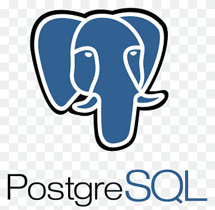
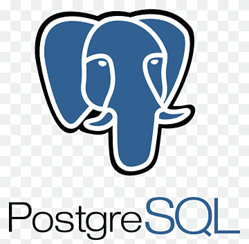

|
JavaScript
|
JavaScript
 | Express
| Express
 | PostgreSQL
 | Supabase
| PostgreSQL
 | Supabase

School Of Code
Junior Full-Stack Web Developer | Mar 2023 — present
- Co-created ‘carbonZero,’ a React.js app that tracks and lowers carbon footprint, using Figma, CSS, Node.js, and Supabase. Link: [carbon-zero]
- Built and launched a web app from scratch, using HTML, CSS, JavaScript, React JS, JSX, Node JS and Supabase.
- Added responsive design, user authentication, and data visualization features for a client’s website, using React JS, Express JS Middleware and Supabase.
- Used modern technologies and frameworks, such as Node.js, JavaScript, and PostgreSQL, to improve web app performance and functionality.
- Worked with other developers and clients, using Git, GitHub, and Slack, to deliver high-quality code and meet deadlines.
- Debugged and tested web apps, using tools such as Chrome DevTools, Thunder Client, Jest and Playwright